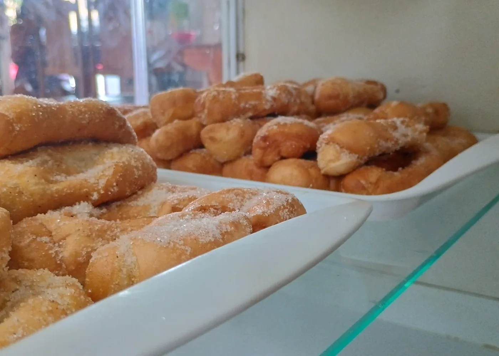
01 · Gastronomia
Padaria artesanal
Textura, calor e produto no centro.
Experiências digitais feitas para parar o scroll, funcionar no celular e transformar curiosidade em conversa.
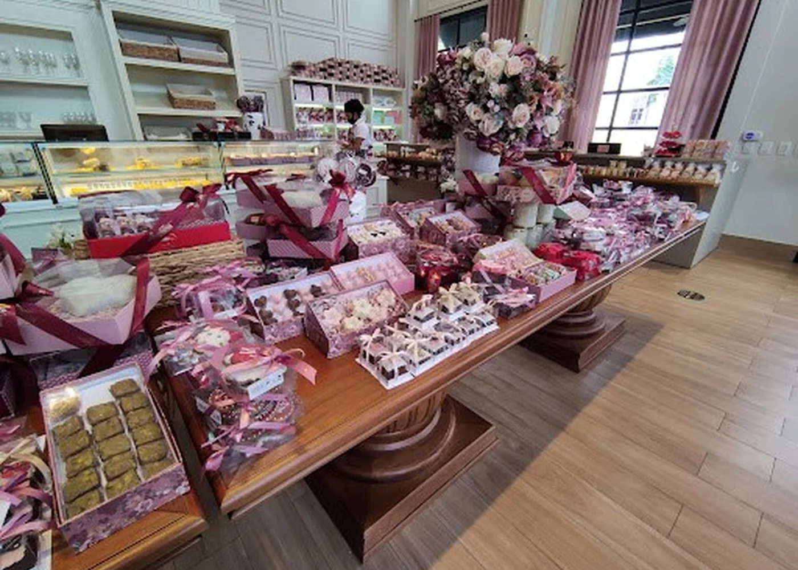
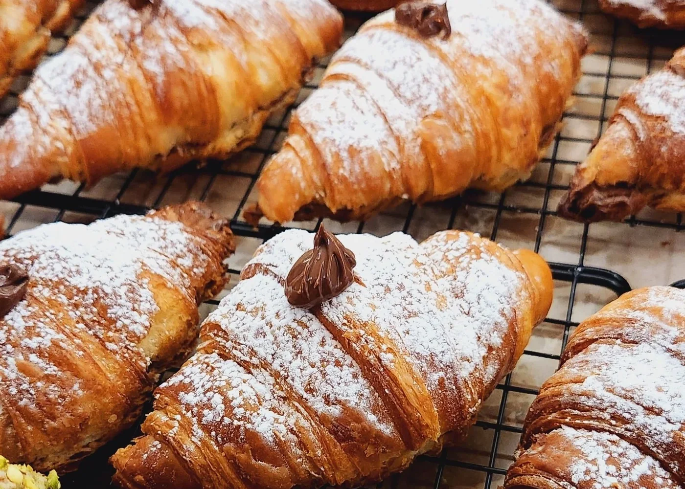
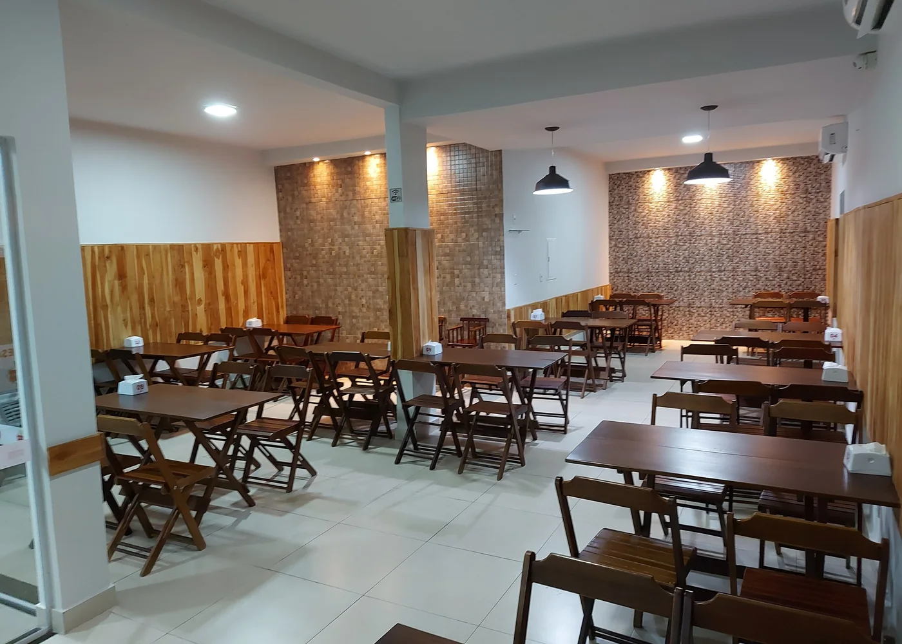
Cada projeto muda de linguagem visual para combinar com o negócio. Nada de trocar a logo num template e chamar isso de identidade.
Fotos reais de projetos demonstrativos · nomes preservados
Textura, calor e produto no centro.
Elegância de revista, navegação de app.
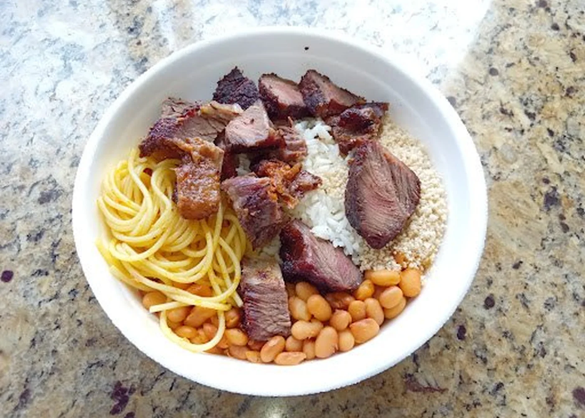
Cardápio claro e fome imediata.
Minimalismo com presença.
Ambiente, produto e desejo.
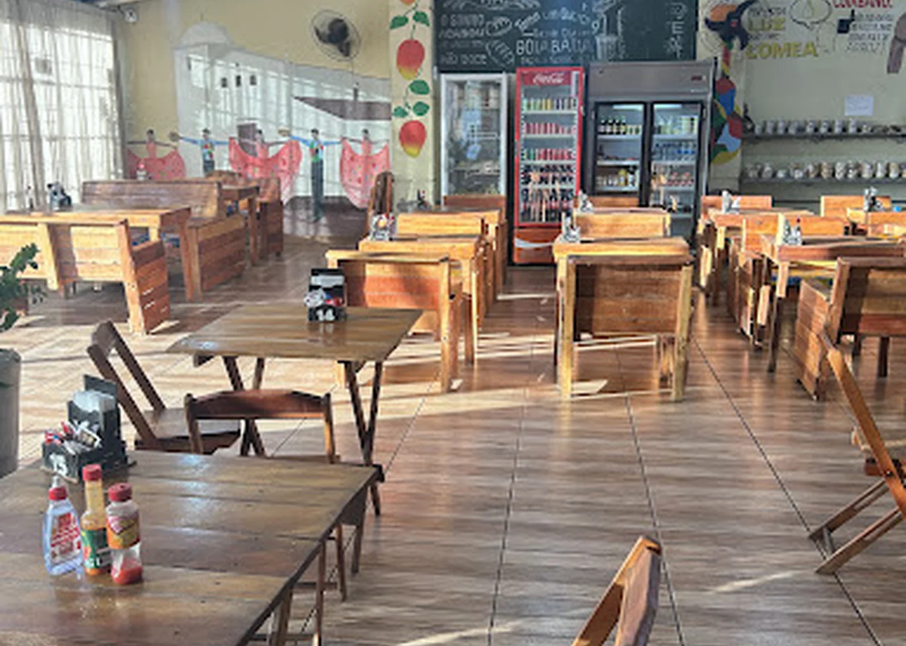
Leve, íntimo e fácil de navegar.
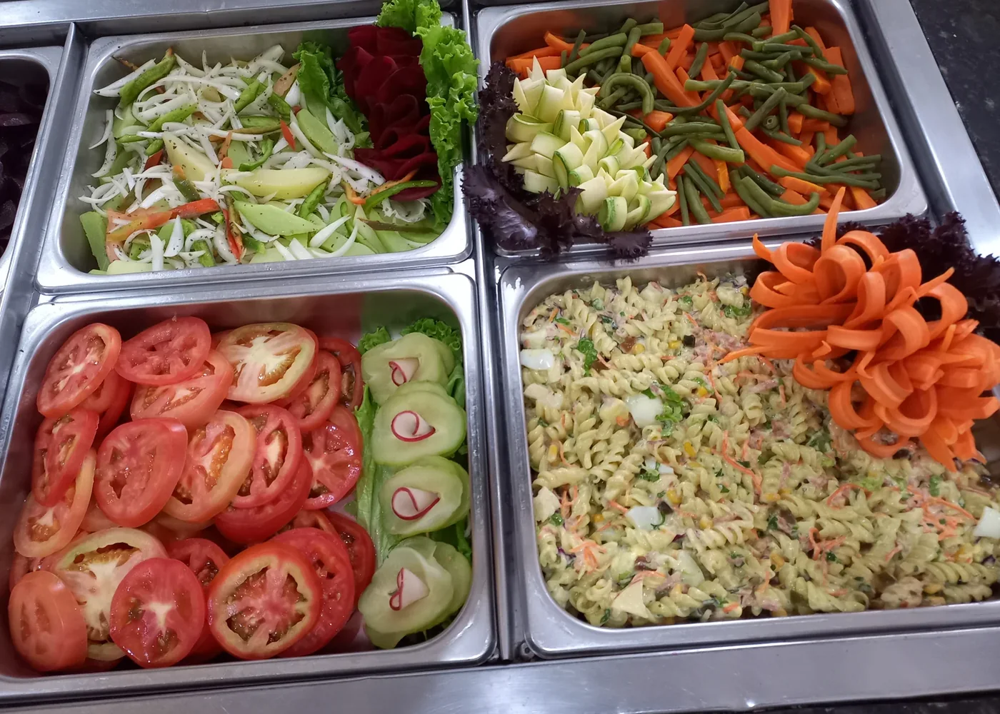
Informação direta sem perder beleza.
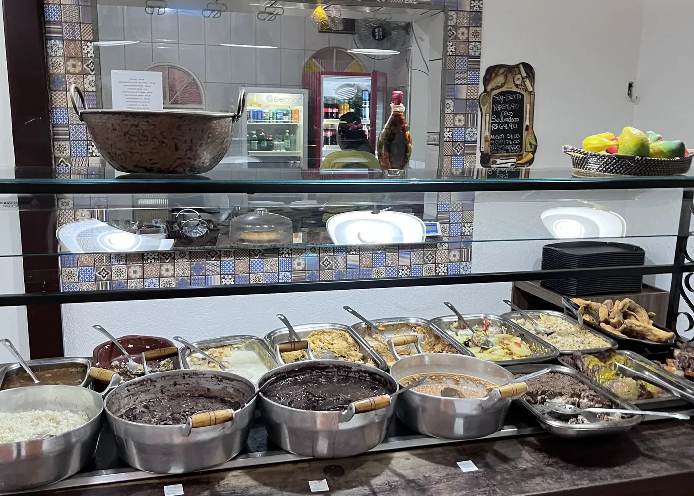
Cor, abundância e movimento.
Espaço como protagonista.
A interface respeita o horário do dispositivo e permite alternar entre modo claro e escuro com um toque. A identidade continua forte nos dois.
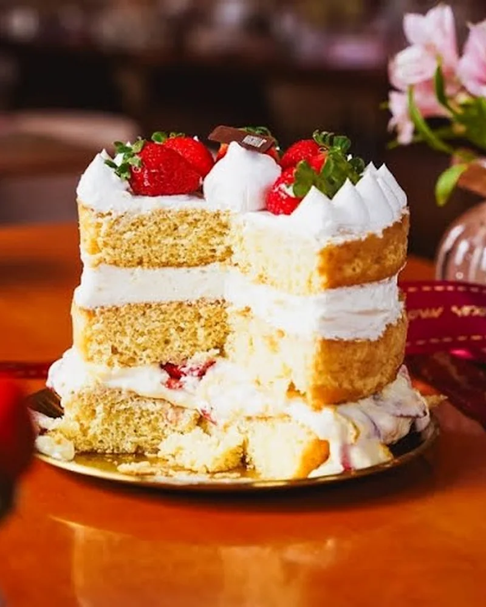
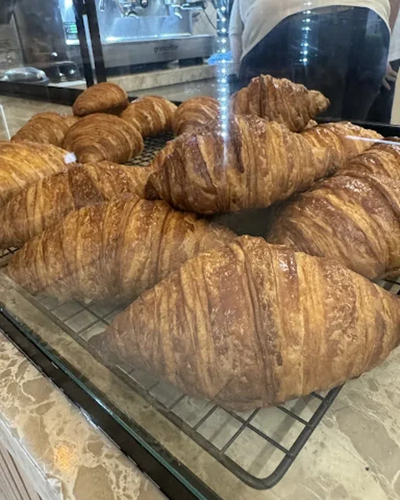
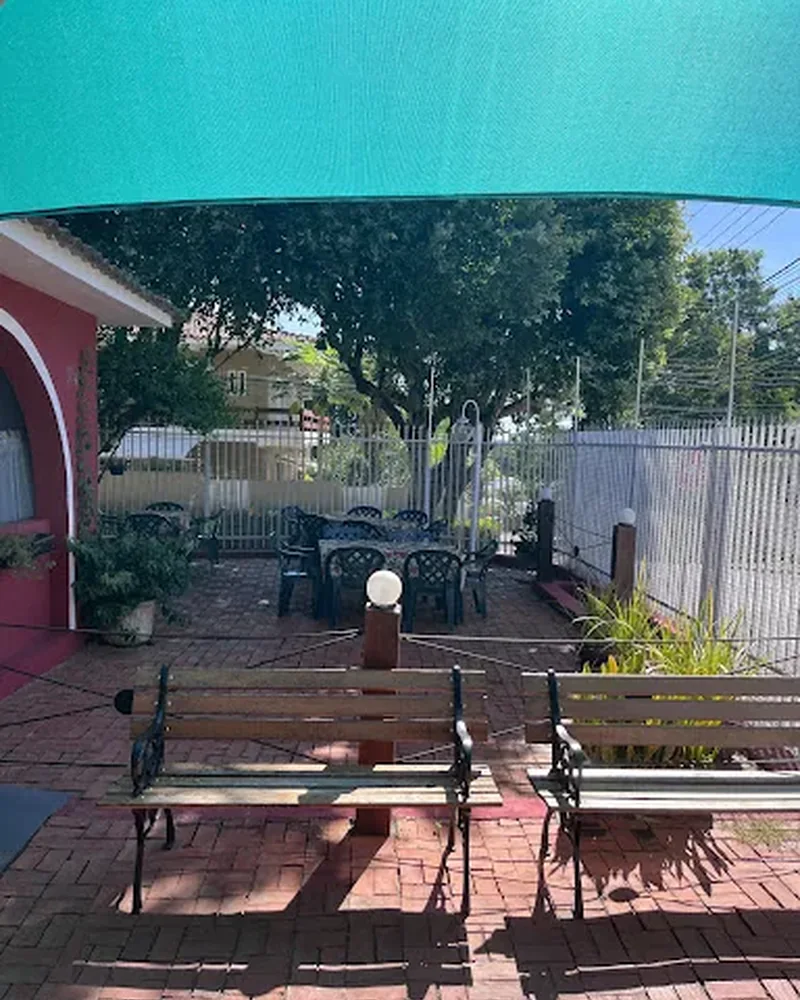
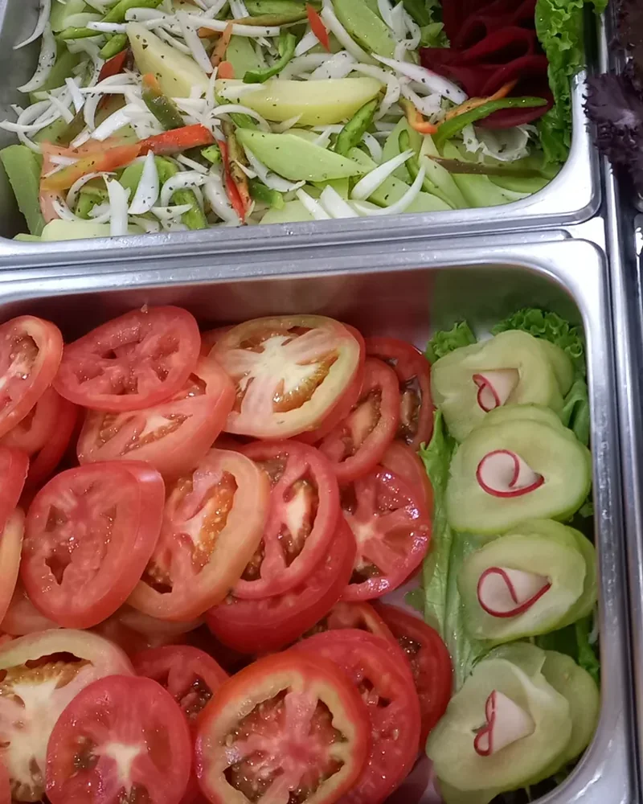
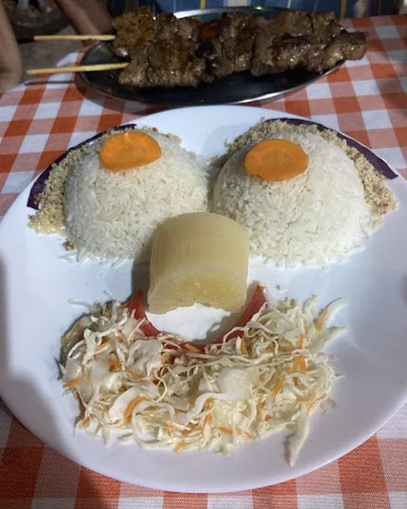
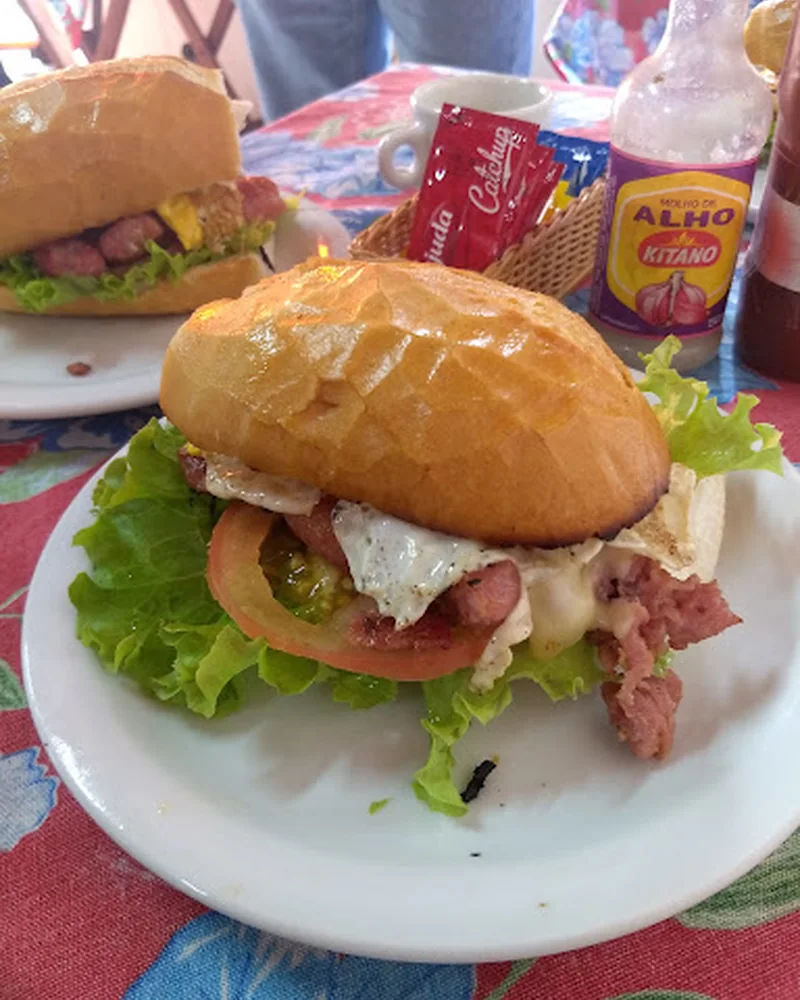
Objetivo, público, estilo e o que o cliente precisa fazer ao entrar.
Identidade visual, estrutura, fotos, animações e versão mobile desde o começo.
Testes de toque, legibilidade, velocidade, responsividade e pequenos detalhes.
Site pronto para divulgar, receber contatos e representar o negócio direito.
Botões grandes, carrosséis que respondem ao dedo, texto legível, navegação curta e WhatsApp a um toque.
Planejar meu siteConte o que você faz e o que imagina. A conversa começa pelo WhatsApp.
WhatsApp(65) 99297-0694